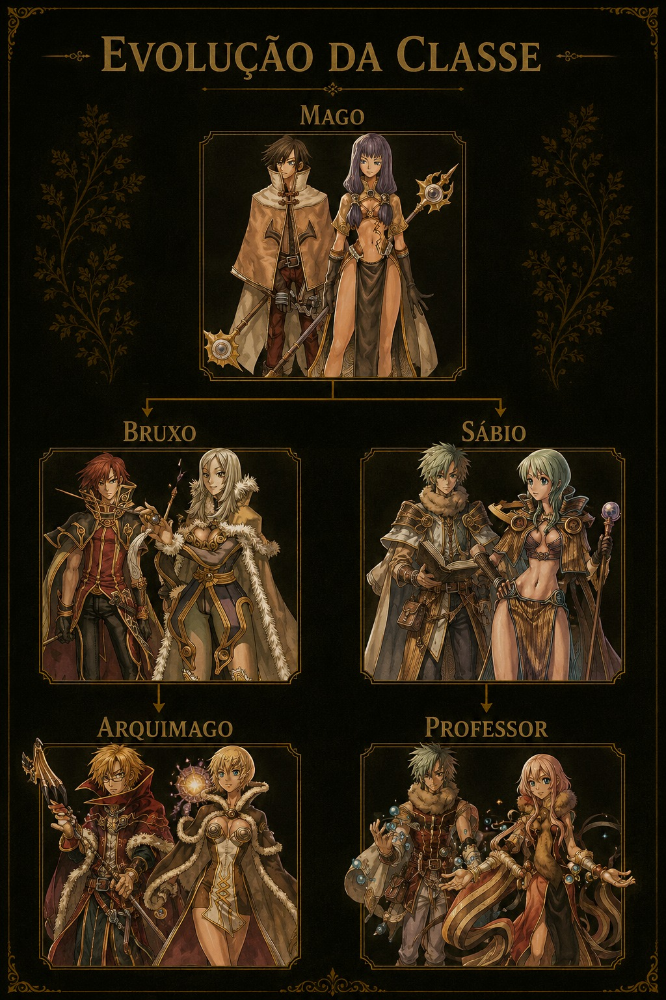
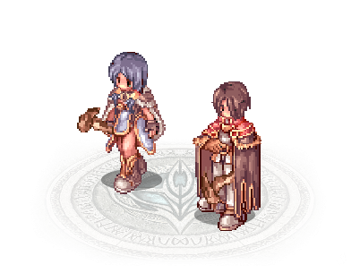

Sobre a Classe
Magos dominam os elementos e utilizam cajados para amplificar seus poderes arcanos, causando grande dano à distância. Apesar da baixa resistência física, compensam com estratégia, velocidade de reação e poder mágico devastador.
Função no Jogo
O Mago é especialista em ataques mágicos de longa distância, utilizando elementos para causar grandes quantidades de dano. É ideal para jogadores estratégicos que gostam de controlar o campo de batalha através da magia.
Características
- Alto dano mágico
- Ataques em área
- Controle elemental
- Grande alcance
- Baixa resistência física
